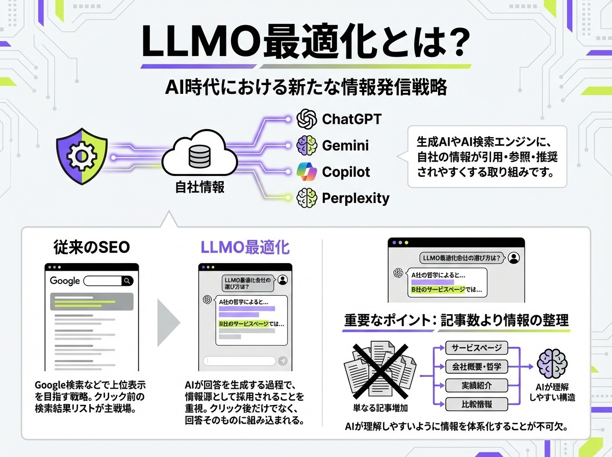
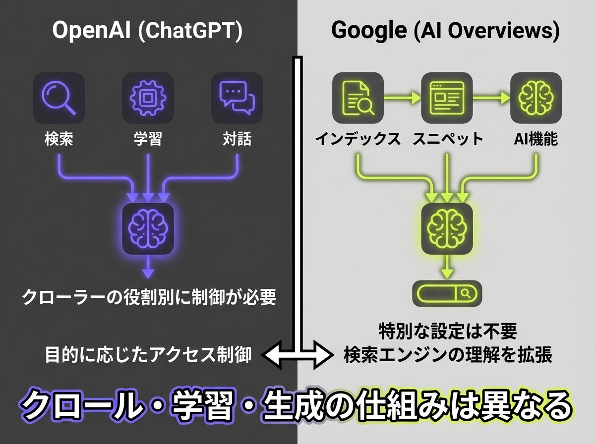
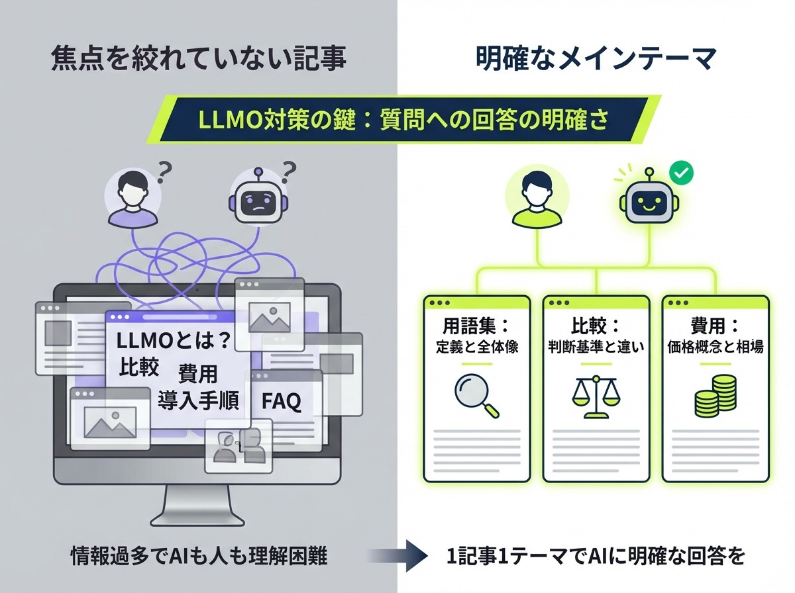
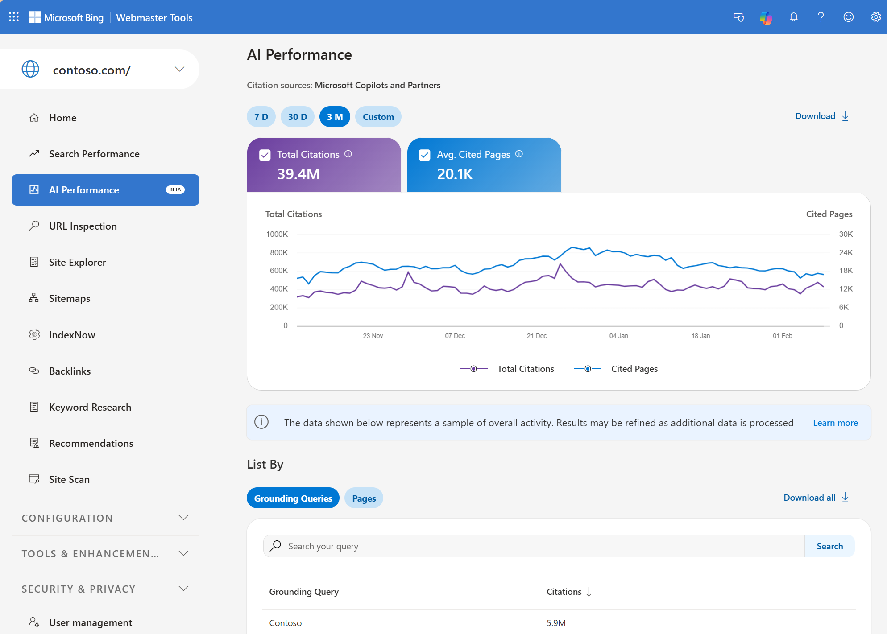
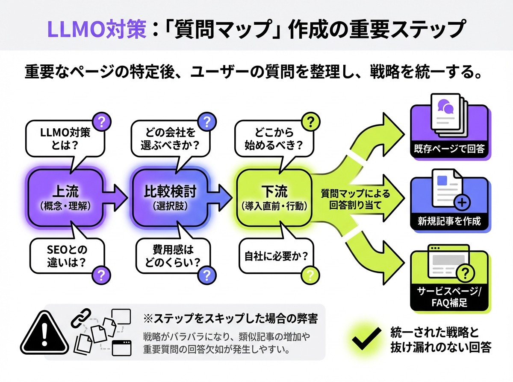

LLMO対策とは？SEOとの違いと実践方法を徹底解説

ChatGPTやGemini、Copilot、Perplexityなどの生成AIを使って情報収集する人が増えたいま、企業のWeb集客では「検索結果で上位に出ること」だけでなく、「AIの回答内で引用・推薦されること」も重要になっています。こうした変化の中で注目されているのが、AIに使われやすい情報設計を進めるLLMO対策です。
ただし、LLMO対策は単に記事を増やせばよいものではありません。サービスページやFAQ、会社情報、外部での言及、効果測定まで含めて整えることで、はじめて成果につながりやすくなります。
本記事では、LLMO対策の基本的な考え方からSEOとの違い、具体的な実践方法、進め方までを分かりやすく解説します。
先に結論
- SEOは検索結果で上位表示され、クリックを獲得するための施策です。
- LLMOはChatGPTやGeminiなどのAI回答で、情報源として引用・参照されやすくするための施策です。
- 実務ではSEOをやめるのではなく、SEOの土台を活かしながらFAQ、比較表、サービスページの情報整理をAI時代向けに広げます。
目次

LLMO対策とは何か
LLMO対策とは、ChatGPTやGemini、Copilot、Perplexityのような生成AIやAI検索において、自社の情報が引用・参照・推薦されやすくなるように整える取り組みです。

従来のSEO対策は、Googleなどの検索結果で上位表示を目指す施策として発展してきました。一方、LLMO対策は、検索結果の一覧でクリックされる前段階だけではなく、AIが回答を生成する過程で情報源として採用されることを重視する点が特徴です。
たとえば、ユーザーが「LLMO対策会社の選び方」や「SEOとLLMOの違い」といった質問をAIに投げたとき、回答文の中で自社の考え方やページが参照される状態を目指すのがLLMO対策だといえます。
そのため、記事を増やすだけでは不十分で、サービスページ、FAQ、会社情報、実績、比較情報なども含めて、AIが理解しやすい形に情報を整理することが重要です。
SEO対策との違い
SEO対策は、検索結果の一覧で上位表示され、ユーザーにクリックされることを主な目的とした施策です。一方、LLMO対策は、AIが回答を生成する際に情報源として採用され、自社名やサービス名、考え方やページが回答文脈の中で参照されることを重視します。
| 項目 | SEO対策 | LLMO対策 |
|---|---|---|
| 主な目的 | 検索結果で上位表示し、クリックを獲得すること | AIの回答内で引用・参照・推薦されること |
| 主な接点 | Googleなどの検索結果一覧 | ChatGPT・Gemini・Copilot・Perplexityなどの回答文脈 |
| 重視すること | 検索順位、クリック率、流入数 | 回答内での出現、引用URL、文脈内での扱われ方 |
| 主な施策 | キーワード設計、記事制作、内部対策、被リンク対策 | 質問設計、引用されやすい情報整理、FAQ整備、外部言及の強化 |
| 評価されやすい情報 | 検索意図に合ったページ、網羅性、内部リンク構造 | 要点が明確な情報、比較しやすい記述、信頼性が伝わる情報 |
| 考え方 | ユーザーにクリックされる入口を作る | AIに使われやすい情報源になる |
ただし、両者は対立する概念ではありません。Google検索向けに整理されたページ構造や、ユーザーの疑問に正面から答えるコンテンツは、AIにとっても理解しやすい土台になります。つまり、SEOの延長線上にありながら、AI時代に合わせて情報の見せ方や設計を一段と深く見直すのがLLMO対策の本質です。
そのため、「SEOをやめてLLMO対策をする」という考え方ではなく、「SEOの基盤を活かしながら、AIに使われやすい情報設計へ広げる」と捉えるほうが実務には合っています。
AIO・GEOとの違い
LLMOに近い言葉として、AIOやGEOが使われることがあります。これらは定義が少し異なりますが、まずは大まかな意味を押さえておくと理解しやすくなります。
- AIO（AI Optimization）：AIに見つけられやすく、理解されやすくするための最適化全般を指す言葉
- GEO（Generative Engine Optimization）：ChatGPTやGemini、Perplexityのような生成AI・AI検索エンジンにおいて、自社の情報が引用・参照されやすくなるように整える考え方
厳密には、AIOはより広い概念で、GEOとLLMOはその中でも生成AIや大規模言語モデルへの最適化を指す言葉として使われやすいです。
ただし、現場ではGEOとLLMOをほぼ同義で扱うケースも多いため、用語の違いを細かく気にしすぎる必要はありません。重要なのは名称そのものではなく、自社の情報がAIに理解されやすく、回答の中で使われやすい形になっているかどうかです。
参考：OpenAI｜Overview of OpenAI Crawlers
参考：Google Search Central｜AI Features and Your Website
参考：OpenAI Help Center｜Publishers and Developers - FAQ
なぜ今LLMO対策が必要なのか
生成AIの普及によって、企業の情報が見つかる導線は大きく変わりつつあります。これまでは検索順位を上げることが主な課題でしたが、今後はAIの回答文脈の中で自社がどう扱われるかも無視できません。
ここでは、なぜ今LLMO対策が必要なのかを、検索行動の変化やSEOとの違いも踏まえて整理します。
検索行動が「一覧を見る」から「答えを聞く」へ変わっているから
これまでの情報収集では、Googleでキーワードを検索し、検索結果に並んだ複数のページを見比べながら判断する流れが一般的でした。しかし今は、ChatGPTやGemini、Copilot、Perplexityのような生成AIに対して、知りたいことをそのまま質問し、要点だけを先に把握する行動が増えています。
特に、BtoBサービスの比較検討や、導入前の情報整理、専門領域の初期調査では、この傾向が強くなりやすいです。ユーザーは最初から複数の記事を丁寧に読むのではなく、まずAIに「何が違うのか」「どこが有力か」「何を基準に選べばよいか」を聞き、その後に必要なページだけを見に行くようになっています。
この変化が意味するのは、従来のように検索順位だけを見ていても十分ではないということです。AIに質問されたときに自社の情報が候補に入らなければ、比較検討の初期段階で接点を持てないまま終わる可能性があります。つまり、LLMO対策は新しい流行語ではなく、検索行動の変化に対応するための実務的な対応だといえます。
AIに出るかどうかで第一想起が変わるから
生成AIの回答では、ユーザーが最初に触れる情報が数社、数サービス、あるいは数個の考え方に絞られやすい傾向があります。そのため、AIの回答内で名前が挙がるかどうかは、単なる一時的な露出ではなく、「その領域で代表的な存在として認識されるか」に直結しやすくなります。
たとえば、ユーザーが「LLMO対策会社 おすすめ」や「SEOとLLMOの違い」と質問したときに、自社名や自社の考え方がAI回答の中に出てくれば、その段階で候補の一つとして認識されます。逆に、どれだけ実力や実績があっても、AI回答の文脈に一度も乗らなければ、そもそも比較対象に入らないまま終わることもあります。
これは、クリック数だけの問題ではありません。AI回答で見かけた会社名やサービス名は、その後の指名検索や問い合わせ時の信頼感にも影響します。つまり、LLMO対策は流入施策としてだけでなく、認知形成や第一想起の獲得という意味でも重要です。
従来のSEOだけでは取りこぼす接点が増えているから
SEO対策は今でも重要ですが、検索順位が高いことと、AI回答の中で使われることは必ずしも同じではありません。検索結果で上位に表示されていても、ページ内の情報が曖昧だったり、比較軸が不足していたり、AIが要点を抽出しにくい構造になっていたりすると、回答の情報源として使われにくいことがあります。
一方で、検索順位が1位ではなくても、定義が明確で、FAQや比較表が整理され、特定の質問に対して端的に答えているページは、AIから見て使いやすい情報源になりやすいです。そのため、従来のSEOだけを見ていると、「検索では勝っているのにAIで見えない」「アクセスはあるのに比較検討の入口で選ばれない」といったズレが起きる可能性があります。
今後は、検索順位を見るだけではなく、AIの回答文脈でどのように扱われるかも含めて考える必要があります。LLMO対策が必要なのは、SEOが不要になったからではなく、SEOだけではカバーしきれない接点が増えているからです。
早く着手したほうが差がつきやすいから
LLMO対策は、まだ多くの企業が体系的に取り組めている領域ではありません。言葉だけは広まりつつある一方で、実際にはサービスページの情報が薄いままだったり、FAQや事例が整っていなかったり、AIでどう見えるかを検証していなかったりするケースが多くあります。
そのため、現時点では、派手なテクニックよりも、基本を丁寧に整えるだけで差がつく可能性があります。自社が何を提供しているのか、誰に向いているのか、他社と何が違うのか、どのような質問に答えられるのかを明確にし、AIに使われやすい形で情報を整理するだけでも、競合より一歩先に出られる余地があります。
もちろん、LLMO対策は短期間で劇的な成果が保証されるものではありません。ただし、情報資産の整備には時間がかかるため、後回しにするほど不利になりやすいのも事実です。だからこそ、今の段階で着手しておく価値があります。
参考：Google Search Central｜AI Features and Your Website
参考：OpenAI｜Overview of OpenAI Crawlers
参考：Bing Webmaster Blog｜Introducing AI Performance in Bing Webmaster Tools Public Preview
まず押さえたい前提｜AIごとに仕組みが違う
LLMO対策を考えるうえで、まず押さえたいのは、ChatGPT・Gemini・CopilotなどのAIが同じ仕組みで情報を見ているわけではないという点です。どのようにページを取得し、何を回答に使い、どこを評価しやすいのかは媒体ごとに異なるため、ひとつの考え方だけで一括対応しようとするとズレが生まれやすくなります。
ここでは、LLMO対策を進める前に知っておきたい前提として、AIごとの違いと実務で意識すべき考え方を整理します。
AIごとにクロール・学習・回答生成の仕組みは異なる
ひとくちに「AIに載る」「AIに引用される」と言っても、その裏側では、どのようにページを取得するのか、何を学習や検索の対象にするのか、どの場面でリンクや引用を出すのかが媒体ごとに異なります。
たとえばOpenAIは、Webサイト運営者向けにクローラーの役割を分けて案内しています。ChatGPTの検索機能に関わるもの、モデル学習に関わるもの、ユーザーが明示的に操作したときにアクセスするものが分かれているため、「OpenAI向けの制御」と言っても一括では考えられません。つまり、AIに関する設定を確認するときは、「何の目的でアクセスされるボットなのか」まで見ておく必要があります。
一方、GoogleはAI OverviewsやAI Modeについて、特別な裏技や専用設定が必要だとは案内していません。基本的には、Google Searchにおける技術要件を満たし、インデックスされ、スニペット表示の対象になっているページがAI機能でも候補になります。そのため、Google文脈では、LLMO対策を完全に別物として考えるより、検索エンジンが理解しやすいページ作りの延長として捉えるほうが実務に合っています。

「robots.txtを1行いじれば終わり」ではない
LLMO対策について調べていると、「robots.txtを設定すればよい」「特定のボットを許可すればよい」といった単純化された説明を見かけることがあります。しかし、実際にはそこまで単純ではありません。
たとえばOpenAIでは、検索に関わるボットと学習に関わるボットが分かれているため、どのボットを許可し、どのボットを制御するかによって影響が変わります。
Each setting is independent of the others -- for example, a webmaster can allow OAI-SearchBot in order to appear in search results while disallowing GPTBot to indicate that crawled content should not be used for training OpenAI's generative AI foundation models.
Googleでも、AI検索向けに特別な新ファイルを用意すればよいという話ではなく、そもそも検索向けの技術要件を満たし、ページがクロール・インデックス・スニペット表示の対象になっていることが前提です。
つまり、LLMO対策は「AI向け設定を足す作業」というより、検索エンジンやAIが安定して理解できる状態に情報を整える作業として考えたほうが本質に近いです。
媒体ごとの差を踏まえて優先順位を決める
AIごとに仕組みが違う以上、LLMO対策も「どこで見つかりたいのか」を意識して優先順位を決める必要があります。
たとえば、ChatGPT経由の露出を重視するなら、OpenAI系のクローラーや流入の確認が重要になります。Google経由でのAI OverviewsやAI Modeを意識するなら、Google Searchの技術要件やインデックス状況、スニペットの扱いを優先的に見直す必要があります。
また、CopilotやBing系の露出も狙うなら、どのURLがAI回答で引用されているかを確認しながら、ページごとの改善を進める発想が重要になります。すべてを完全に分けて考える必要はありませんが、「どのAIでも同じ対策で同じように結果が出る」と考えるのは危険です。
参考：OpenAI｜Overview of OpenAI Crawlers
参考：Google Search Central｜AI Features and Your Website
参考：Bing Webmaster Blog｜Introducing AI Performance in Bing Webmaster Tools Public Preview
参考：Google Search Central｜Robots meta tag, data-nosnippet, and X-Robots-Tag specifications
Google・ChatGPT・Copilotで共通して重要なこと
AIごとに仕組みや見え方に違いはありますが、それでも共通して重要になる基本はあります。どの媒体を意識する場合でも、まずは「見つけられること」「内容が理解しやすいこと」「誰が発信しているかが伝わること」といった土台が整っていなければ、引用や参照の候補に入りにくくなります。
ここでは、Google・ChatGPT・Copilotに共通して押さえたいポイントを整理します。
まずはクロールされること
LLMO対策を考えるうえでは、まずページが安定してクロールされる状態にあるかを確認することが重要です。どれだけ内容の良いページを作っても、そもそも検索エンジンやAI関連の仕組みに取得されなければ、引用や参照の候補に入りにくくなります。
具体的には、以下の点を見直しましょう。
- robots.txtで重要なディレクトリを誤って制限していないか
- noindexの設定が不要なページに入っていないか
- 内部リンクが極端に弱く孤立したページになっていないか
AI時代の施策というとコンテンツや構成に意識が向きがちですが、前提となる取得性が崩れていると、その先の改善が活きにくくなります。
ページの役割が明確であること
Google、ChatGPT、Copilotのいずれにおいても、情報源として使われやすいページには共通点があります。その一つが、「そのページが何のためのページなのか」が明確であることです。
たとえば、「LLMO対策とは何か」を説明する記事に、会社紹介、料金、事例、比較、FAQをすべて同じ密度で詰め込むと、情報は多くても焦点がぼやけやすくなります。
一方で、用語解説なら定義と基本理解に集中し、比較記事なら違いと判断軸に集中し、サービスページなら対象企業や支援内容、強みを明確にするほうが、AIにもユーザーにも伝わりやすくなります。
重要な内容がテキストとして存在していること
AIや検索エンジンに情報を理解してもらううえで、重要な内容がテキストとして存在していることは非常に重要です。Googleにおいても、次のように述べられています。
Googlebot が認識できるコンテンツは、文字で表現されているものに限られます。たとえば、動画のテキストを認識することはできません。Google 検索がページの内容を認識できるようにするには、次のようにします。
もちろん、図解や表そのものが悪いわけではありません。大切なのは、視覚的な見せ方に加えて、同じ内容が文章としても分かる状態にしておくことです。たとえば、「誰向けのサービスか」「何が強みか」「他社と何が違うか」といった要点は、見出しや本文の中でも明確に言語化しておく必要があります。
誰が発信しているのかが分かること
AIが扱いやすいページは、単に説明が分かりやすいだけではありません。その情報を誰が発信しているのか、どんな会社や運営者が出しているのかも含めて、信頼性が伝わる状態になっていることが重要です。
たとえば、会社概要、事業内容、代表情報、実績、問い合わせ先、監修者情報などが整っているサイトは、情報の出どころが明確です。一方で、記事だけは増えているのに、どの会社が運営しているのか分かりにくかったり、サービスの実態が見えにくかったりするサイトは、内容が正しくても信頼の積み上がりが弱くなりやすいです。
これはE-E-A-Tのような文脈とも重なりますが、実務では難しく考えすぎなくても構いません。まずは「この情報は誰が、どんな立場で、何を根拠に発信しているのか」が分かる状態を作ることが重要です。特に、LLMO対策のように比較検討や導入判断に関わるテーマでは、この土台の有無がAIにもユーザーにも影響しやすくなります。
参考：Google Search Central｜AI Features and Your Website
参考：Google Search Central｜Robots meta tag, data-nosnippet, and X-Robots-Tag specifications
参考：OpenAI｜Overview of OpenAI Crawlers
参考：Microsoft Advertising｜Optimizing your content for inclusion in AI Search Answers
LLMO対策の全体像
LLMO対策という言葉は広く見えますが、実務として進めるときは、大きく4つに分けて考えると整理しやすくなります。具体的には、以下の4つです。
- 内部対策
- コンテンツ対策
- 外部対策
- 検証・改善
それぞれを詳しく説明します。
【内部対策】AIが読み取りやすい土台をつくる
内部対策とは、サイトの構造やページの役割、技術的な取得しやすさなど、AIや検索エンジンが情報を理解しやすくするための基盤整備を指します。具体的には、以下のような施策です。
- サービスページの情報整理
- 会社情報の明示
- FAQの追加
- 内部リンクの見直し
- 重要情報をテキストで持たせることなど
たとえば、自社のサービスページに「何をしてくれる会社なのか」「誰向けなのか」「何が強みなのか」が十分に書かれていない場合、AIはそのページを比較検討時の情報源として使いにくくなります。
また、会社概要や実績、問い合わせ先が見つけにくいサイトも、情報の出どころが分かりにくくなり、信頼性の面で不利になりやすいです。
【コンテンツ対策】AIに使われる情報そのものを整える
コンテンツ対策は、AIが実際に参照・引用・要約しやすい情報を用意する取り組みです。ここで重要なのは、単に記事本数を増やすことではなく、「どの質問に対して、どのページで、どのように答えるか」を設計することです。
たとえば、「LLMO対策とは何か」という上流の疑問に答える記事と、「LLMO対策会社の選び方」という比較検討フェーズの記事では、求められる情報が異なります。また、「費用はどれくらいか」「何から始めればよいか」「SEOとどう違うのか」といった周辺質問に答えられるFAQや比較表も重要です。
さらに、サービスページや料金ページ、事例ページもコンテンツの一部として考える必要があります。LLMO対策では、オウンドメディアの記事だけでなく、比較検討や導入判断に直結するページも情報源として使われやすいためです。そのため、コンテンツ対策は「記事チームだけの仕事」ではなく、サイト全体の情報設計として捉えるべきです。
【外部対策】第三者文脈を増やす
LLMO対策では、自社サイトの中身を整えるだけでなく、外部でどのように言及されているかも無視できません。外部対策とは、被リンク、サイテーション、業界媒体での紹介、比較記事での掲載、SNSでの専門性のある発信など、第三者の文脈の中で自社がどう扱われるかを整えていく取り組みです。
AIは自社サイトだけを見て判断しているわけではありません。どのテーマで言及されているか、どの領域の会社として認識されているか、比較記事やレビュー文脈で名前が挙がっているかといった外部シグナルも、信頼性や想起の形成に影響しやすくなります。
もちろん、外部対策はすぐに大量にできるものではありません。ただし、比較されやすい情報を自社サイトに整備しておくことで、外部媒体からも紹介されやすくなります。
【検証・改善】仮説を立てて改善し、見え方を確認する
LLMO対策で見落とされやすいのが、施策を実行した後の検証と改善です。記事を作る、サービスページを直す、FAQを足す、といった施策を行っても、それが実際にAIの回答文脈でどう使われているのかを見なければ、何が効いたのか分かりません。
たとえば、自社名やサービス名でAIに質問したときに出るかどうか、一般ワードではどのページが引用されるか、競合のどのURLが強いのかを継続的に確認することで、改善の方向性が見えてきます。逆に、検証をしないまま施策を積み上げると、「何となく頑張っているが成果が見えない」という状態に陥りやすくなります。
そのため、LLMO対策は一度やって終わりの施策ではなく、仮説を立てて改善し、見え方を確認してまた整える運用型の取り組みとして考えることが重要です。
参考：Google Search Central｜AI Features and Your Website
参考：OpenAI｜Overview of OpenAI Crawlers
参考：Bing Webmaster Blog｜Introducing AI Performance in Bing Webmaster Tools Public Preview
参考：Microsoft Advertising｜Optimizing your content for inclusion in AI Search Answers
LLMO対策①内部対策
LLMO対策では、まずAIや検索エンジンに正しく見つけられ、内容を理解してもらえる土台を整えることが重要です。記事制作や外部露出に力を入れても、サービスページの情報不足や発信者情報の弱さ、技術設定の不備があると、引用・参照される可能性は高まりにくくなります。
ここでは、LLMO対策の出発点として優先的に見直したい内部対策を整理します。
サービスページの情報不足をなくす
LLMO対策を進めるとき、最初に見直したいのがサービスページです。多くの企業サイトでは、オウンドメディアの記事は増えていても、肝心のサービスページに必要な情報が十分に載っていないことがあります。しかし、AIに比較検討や導入判断の文脈で扱われたいなら、サービスページの情報整理は避けて通れません。
特に重要なのは、「何のサービスなのか」「誰向けなのか」「どのような課題を解決するのか」「他社と何が違うのか」が一読で分かる状態にすることです。
逆に、抽象的な表現だけで構成されているページや、見た目は整っていても具体性に欠けるページは、比較の材料として使われにくくなります。サービスページは単なる会社紹介ではなく、「この会社は何をしてくれるのか」を伝える中核ページなので、LLMO対策の起点として最優先で見直す価値があります。
会社情報・運営者情報を整える
AIに引用されやすい情報源を作るうえで、ページ内容そのものと同じくらい大切なのが、発信者情報の明確さです。記事やサービスページの内容が良くても、どの会社が運営しているのか、誰が責任を持って発信しているのかが分かりにくいと、信頼の積み上がりが弱くなりやすくなります。
そのため、会社概要、事業内容、代表者情報、所在地、連絡先、実績、導入事例、問い合わせ導線などは、見つけやすい形で整理しておくことが重要です。特にBtoB商材や専門性の高いサービスでは、「この会社は何者なのか」が分からないだけで比較対象から外れやすくなります。
また、運営者情報は単に会社概要ページを作ればよいという話ではありません。サービスページや記事ページと適切につながっていることも重要です。たとえば、記事から会社情報にたどれる、サービスページに実績や支援者情報が載っている、問い合わせにつながる導線が自然にある、といった状態にしておくことで、サイト全体の一貫性が強まります。
robots.txt・metaタグの設定を確認する
LLMO対策というとコンテンツ面に意識が向きがちですが、重要ページが正しくクロールやインデックスの対象になっているかを確認することも欠かせません。サービスページや主要記事が意図せず制御されていれば、どれだけ内容を改善しても、AIや検索エンジンに十分認識されにくくなります。
そのため、まずはrobots.txtで重要なディレクトリやURLを誤って制限していないかを確認する必要があります。また、meta robotsでnoindexやnosnippetが不要に入っていないか、X-Robots-Tagの設定に問題がないかも見ておきたいポイントです。
特に、サイト改修やステージング環境からの移行時には、意図しないnoindexが残っているケースがあります。こうした設定ミスは見落とされやすい一方で、LLMO対策の土台を大きく崩す原因になります。まずは「重要ページが見つかり、読まれ、要約される前提が整っているか」を技術面から確認することが重要です。
XMLサイトマップと更新情報を整える
サイト内の情報をAIや検索エンジンに見つけてもらいやすくするためには、XMLサイトマップの整備も重要です。XMLサイトマップは、どのURLが存在し、どのページが重要で、いつ更新されたのかを伝える基本的な手段のひとつです。
特に、サービスページや主要記事を更新しても、その更新が適切に伝わらなければ、AIや検索エンジン側で古い理解のまま扱われる可能性があります。そのため、XMLサイトマップには不要なURLを大量に載せるのではなく、インデックスさせたい主要ページを中心に整理することが大切です。
また、更新日時の管理も軽視できません。lastmodが実態と合っていない、あるいは更新してもサイトマップに反映されていない状態では、更新性のシグナルが弱くなります。LLMO対策は記事を増やすことだけでなく、既存ページを育てることも重要なので、更新情報が適切に伝わる仕組みを整えておく必要があります。
重要な情報を画像や装飾の中に閉じ込めない
サービスサイトでは、デザインを整えるために、強みや違い、料金、導入の流れなどの重要情報を画像やカードUIの中に寄せることがあります。見た目としては分かりやすくても、その情報がテキストとして十分に存在していなければ、AIや検索エンジンにとっては扱いづらい状態になりやすいです。
たとえば、比較表が画像だけで作られていたり、料金表の要点が装飾だけで表現されていたり、FAQの回答が折りたたみUIの中に閉じていて読み取りにくかったりすると、重要な情報が十分に拾われない可能性があります。もちろん、画像や図解を使うこと自体は問題ありませんが、同じ内容をテキストでも理解できるようにしておくことが重要です。
特に、LLMO対策では「誰向けか」「何が違うか」「どんな成果が見込めるか」といった比較検討に直結する情報が重要になります。これらはデザインの中に埋め込むだけでなく、見出しや本文でも明確に言語化しておくべきです。
参考：OpenAI｜Overview of OpenAI Crawlers
参考：Google Search Central｜Robots meta tag, data-nosnippet, and X-Robots-Tag specifications
参考：Google Search Central｜AI Features and Your Website
参考：Bing Webmaster Blog｜Keeping Content Discoverable with Sitemaps in AI-Powered Search
参考：Microsoft Advertising｜Optimizing your content for inclusion in AI Search Answers
LLMO対策②コンテンツ施策
LLMO対策におけるコンテンツ施策は、単に記事本数を増やすことではありません。重要なのは、ユーザーがAIにどのような質問を投げ、その疑問に対してどのページで何を答えるのかを整理することです。
質問設計、記事ごとの役割分担、独自情報の追加、サービスページの改善まで含めて設計することで、はじめてAIに引用・参照されやすいコンテンツの土台が整います。
まずは「AIに聞かれそうな質問」を洗い出す
最初にやるべきなのは、ユーザーがAIにどのような質問を投げるのかを整理することです。ここが曖昧なまま記事を書き始めると、テーマが散らかりやすくなり、どのページで何を伝えるべきかもぼやけてしまいます。
たとえば、LLMO対策というテーマでも、上流では「LLMO対策とは何か」「SEOと何が違うのか」といった基礎理解の質問があります。一方で、比較検討フェーズになると「LLMO対策会社はどう選べばよいか」「内製と外注はどちらがよいか」「費用相場はどれくらいか」といった質問に変わります。さらに導入直前では、「何から始めるべきか」「自社に必要なのか」「どのページを先に直すべきか」といった実務寄りの疑問が出てきます。
このように、AIに聞かれる質問は、ユーザーの検討段階によって変わります。そのため、コンテンツ施策では、単にキーワードを並べるのではなく、ユーザーがどの順番で疑問を持ちやすいかを意識して質問を整理することが重要です。
1記事1テーマで主題を明確にする

質問を整理したら、次に重要なのが、1記事ごとの主題を明確にすることです。LLMO対策では、AIが特定の質問に答えるために情報を抽出しやすい形になっていることが重要なので、1ページの中に複数の論点を詰め込みすぎると、かえって使われにくくなることがあります。
たとえば、「LLMO対策とは何か」を説明する記事の中に、会社比較、費用相場、事例、導入手順、FAQをすべて同じ密度で入れると、一見情報量は多くなりますが、ページの焦点がぼやけやすくなります。これでは、読者にとってもAIにとっても、「このページは何の疑問に答える記事なのか」が分かりにくくなります。
一方で、用語解説の記事なら定義と全体像に集中し、比較記事なら判断軸と違いの整理に集中し、費用記事なら料金の考え方と相場感に集中するほうが、ページの役割が明確になります。LLMO対策では情報量の多さよりも、質問に対する答えの明快さのほうが重要です。
周辺質問まで先回りして回収する
主題に対する答えだけでなく、周辺で気になりやすい論点まで回収しておくことが重要です。AIは、ユーザーの質問をそのまま1つだけ処理するのではなく、関連する意図や周辺質問も含めて回答を組み立てる傾向があります。GoogleもAI検索機能の中で、質問を分解しながら複数の関連検索を走らせる考え方を案内しています。
たとえば、「LLMO対策とは何か」という記事なら、定義だけを書いて終わるのではなく、「SEOとどう違うのか」「なぜ今必要なのか」「何をすればよいのか」といった関連論点も見出しの中でカバーしたほうが、AIにとって回答を組み立てやすくなります。
ただし、ここで大切なのは、何でも詰め込むことではありません。あくまで主題を軸にしながら、その質問に関連して読者が次に気になりやすいことを、見出し構成の中で自然に回収することがポイントです。
一般論だけでなく独自情報を入れる
LLMO対策のコンテンツで差がつきやすいのは、一般論をなぞるだけで終わらず、自社ならではの視点や実務知見を入れられているかどうかです。AIは既存情報を要約して返すことができますが、どこにでもある抽象論だけでは、情報源としての独自性が弱くなりやすくなります。
たとえば、支援現場でよく見る失敗パターン、比較時に見落とされやすいポイント、実際に改善して変化が出やすかった項目、サービスページで不足しやすい情報などは、独自情報として差別化しやすい要素です。こうした内容が入ると、単なるまとめ記事ではなく、実務経験に基づいた記事としての密度が上がります。
また、独自情報は大げさな調査レポートである必要はありません。現場で繰り返し見ている傾向や、支援中によく出る質問、競合比較でよくズレる観点なども十分に価値があります。LLMO対策では、こうした一次的な気づきをどれだけ言語化できるかが重要です。
参考：Google Search Central｜AI Features and Your Website
参考：Microsoft Advertising｜Optimizing your content for inclusion in AI Search Answers
参考：OpenAI｜Overview of OpenAI Crawlers
LLMO対策③外部対策
LLMO対策では、自社サイトの改善だけでなく、サイトの外側でどのように情報が流通しているかも重要になります。AIは自社発信の情報だけで判断するのではなく、比較記事や外部メディア、SNSなどにある周辺情報も含めて、企業やサービスの理解を深めます。
ここでは、LLMO対策における外部対策として、意味のある露出の作り方や比較文脈への入り方、SNS活用の考え方を解説します。
第三者に言及される文脈を作る
外部対策では「どこからリンクされているか」だけではなく、「どのテーマで、どのように紹介されているか」を意識しましょう。AIは自社サイトの情報だけでなく、外部でどのように言及されているかという文脈も含めて、その会社やサービスを捉えやすいからです。
たとえば、LLMO対策やSEO、AI活用のようなテーマに関する業界メディアや比較記事、インタビュー記事、寄稿記事などで、自社が専門性のある立場として言及されると、その領域における立ち位置が分かりやすくなります。
逆に、外部でほとんど言及がなく、自社サイトの中でしか主張が存在しない状態だと、内容が良くても第三者視点の補強が弱くなります。だからこそ、LLMO対策では、自社発信だけで完結させず、外部でどのような文脈を作るかまで考える必要があります。
被リンクだけでなく「意味のある露出」を増やす
LLMO対策で重要なのは、被リンクや言及がどのような意味を持っているかです。信頼性のある外部サイトからの被リンクは重要ですが、LLMO対策の文脈では、単にリンクの本数を増やせばよいという話ではありません。
たとえば、関係の薄いテーマのサイトから機械的にリンクされるよりも、AI検索、SEO、コンテンツ制作、BtoBマーケティングといった関連領域の中で、自社の強みや特徴が文脈つきで紹介されるほうが価値があります。なぜなら、AIにとってもユーザーにとっても、「この会社はどんなテーマで信頼されているのか」が分かりやすくなるからです。
そのため、外部対策ではリンク獲得そのものを目的にするのではなく、どのテーマで、どんな立場で、どういう強みを持つ会社として認識されたいのかを先に考えることが重要です。言い換えると、外部対策は露出の量ではなく、露出の意味を設計する施策だといえます。
比較記事や一覧記事に載る準備をする
LLMO対策では、比較記事や会社一覧、ツール一覧のような第三者コンテンツに載ることも重要です。ユーザーがAIに「おすすめの会社」「比較表」「選び方」を聞いたとき、AIはそうした外部コンテンツを参考にしながら回答を組み立てることがあります。そのため、比較文脈で見つかりやすい状態を作ることは、外部対策の重要な一部です。
ただし、これは単に「一覧記事に載せてもらう」ことだけを意味しません。比較されやすい情報を、自社サイト上できちんと整理しておくことも前提になります。たとえば、支援範囲、対象企業、料金の考え方、強み、実績、他社との違いなどが明確になっていれば、第三者も紹介しやすくなります。
逆に、自社サイトに必要な情報が不足していると、比較記事に載りにくくなるだけでなく、載ったとしても曖昧な紹介になりやすいです。つまり、外部対策は外部に働きかけることだけではなく、外部から理解されやすい素材を自社で整えることとセットで考える必要があります。
SNSや外部プラットフォームで発信する
SNSや外部プラットフォームでの発信も、LLMO対策における外部文脈づくりの一部として考えられます。もちろん、SNSの投稿がそのままAI回答に直接反映されると単純化して考えるべきではありませんが、どのテーマで継続的に発信しているか、どの領域の専門家として見られているかという認知形成には影響しやすいです。
たとえば、LLMO対策、AI検索、SEO、コンテンツ設計といったテーマで継続的に発信していれば、その会社や担当者がどの分野に強いのかが外部から見えやすくなります。また、SNSをきっかけに取材や寄稿、比較記事掲載などの外部露出につながることもあります。
重要なのは、SNSを単なる拡散手段としてではなく、専門文脈を補強する補助線として使うことです。テーマがぶれていたり、発信内容が自社の強みとつながっていなかったりすると、外部文脈としての積み上がりは弱くなります。そのため、外部発信も「何の専門家として見られたいか」を意識して設計することが大切です。
参考：Google Search Central｜AI Features and Your Website
参考：Microsoft Advertising｜Optimizing your content for inclusion in AI Search Answers
参考：OpenAI Help Center｜Publishers and Developers - FAQ
LLMO対策で作るべきコンテンツの種類
LLMO対策では、どの検討段階のユーザーに対して、どの種類のコンテンツで答えるのかを整理することが重要です。上流の認知獲得に向く記事もあれば、比較検討を後押しする記事、信頼性を補強する記事、問い合わせ直前の不安を解消する記事もあります。
ここでは、LLMO対策を進めるうえで押さえておきたい代表的なコンテンツの種類と、それぞれの役割を解説します。
用語解説コンテンツ
LLMO対策でまず土台になりやすいのが、用語解説コンテンツです。これは、「LLMO対策とは何か」「AI検索とは何か」「SEOと何が違うのか」といった上流の疑問に答えるためのコンテンツで、初めて情報収集するユーザーとの接点を作りやすい役割があります。
用語解説コンテンツの重要なポイントは、定義を曖昧にしないことです。たとえば、LLMOという言葉を説明するときに、単に「AI時代の新しい最適化手法です」とだけ書いても、読者にもAIにも要点が伝わりにくくなります。何を目的とする施策なのか、SEOとの違いは何か、どこまでを含むのかを明確に言語化することが大切です。
また、用語解説コンテンツは単独で終わるものではありません。そこから比較記事、費用記事、導入記事、サービスページへと自然につながる導線を作ることで、サイト全体の文脈も強くなります。そのため、上流向けの入口記事としてだけでなく、サイト内の基準ページとして育てる意識が重要です。
比較・選び方コンテンツ
比較・選び方コンテンツは、LLMO対策において非常に重要です。なぜなら、AIに質問するユーザーの多くは、単なる定義よりも、「結局どう選べばいいのか」「どこが違うのか」を知りたいからです。
たとえば、「LLMO対策会社の選び方」「SEO会社とLLMO支援会社の違い」「内製と外注の比較」「ツール型とコンサル型の違い」などは、比較検討フェーズの質問に対応しやすいテーマです。こうした記事では、単に候補を並べるのではなく、比較軸を明確にすることが重要です。
比較軸としては、費用、支援範囲、向いている企業規模、対応媒体、実装の深さ、成果の見方などが考えられます。比較記事が強いサイトは、読者だけでなくAIにとっても判断材料を取り出しやすいため、推薦や比較の文脈で扱われやすくなります。
課題解決コンテンツ
課題解決コンテンツは、ユーザーが困りごとをそのままAIに聞く場面で強みを発揮します。たとえば、「AIに引用されない理由」「自社サイトがChatGPTで出てこない原因」「サービスページが弱い会社の共通点」「FAQを整備すべき理由」など、課題や不安に正面から答えるテーマです。
このタイプのコンテンツは、定義系よりも一歩進んだ検討段階のユーザーと相性がよくなります。また、課題の背景、原因、対処法を順番に整理しやすいため、AIにも要点を再利用されやすい構造を作りやすいです。
特にLLMO対策では、「何をすればよいか分からない」という状態のユーザーが多いため、課題解決コンテンツが導線の中心になることも少なくありません。つまり、上流の理解を取るだけでなく、検討を前に進める役割も持てるのがこのタイプの特徴です。
事例コンテンツ
事例コンテンツは、信頼性を補強するうえで非常に重要です。用語解説や比較記事だけでは、「理屈は分かるが、本当に実務で機能するのか」が伝わりにくいことがあります。そこで、実際にどのような課題があり、どのような改善を行い、何が変わったのかを示す事例コンテンツが効いてきます。
たとえば、「サービスページの情報整理を行った結果、比較文脈での露出が増えた」「FAQを追加したことで問い合わせ前の理解が進みやすくなった」「AIに出てこなかった会社が、重要ページの改善後に指名検索経由の相談につながった」といった形で、改善前後や実施内容を具体的に示せると、記事全体の説得力が大きく上がります。
また、事例コンテンツはAIに対しても有効です。なぜなら、単なる抽象論ではなく、特定の条件下での施策と結果が整理されているため、回答の中で「具体例」として使われやすいからです。もし数値を公開しにくい場合でも、どのような課題に対して何を行ったのかだけでも十分に価値があります。
FAQコンテンツ
FAQコンテンツは、LLMO対策と非常に相性がよい形式です。AIに質問する行動そのものが、ある意味ではFAQ的だからです。ユーザーは、「費用はどれくらいか」「どのくらいで効果が出るのか」「中小企業でも必要か」「まず何から始めるべきか」といった短い問いをAIに投げることが多く、その問いに対して単独でも意味が通る答えを用意しておくことが重要です。
FAQは、サービスページの下部に補助的に置くだけでも有効ですが、質問数が多い場合は独立したFAQページやQ&A記事として展開することもできます。特に、比較検討や問い合わせ直前に出やすい疑問は、FAQとして整理しておくことで、ユーザーにもAIにも扱いやすい情報になります。
また、FAQの回答は短すぎても弱く、長すぎても要点が埋もれやすくなります。最初に結論を置き、その後に条件や補足を加える形にすると、回答としての再利用性が高まりやすくなります。
参考：Google Search Central｜AI Features and Your Website
参考：Microsoft Advertising｜Optimizing your content for inclusion in AI Search Answers
参考：OpenAI Help Center｜Publishers and Developers - FAQ
AIに拾われやすい記事の書き方
AIに引用・参照されやすい記事にするには、テーマ選定や構成だけでなく、本文そのものの書き方も重要です。内容が正しくても、要点が伝わりにくい書き方になっていると、読者にとってもAIにとっても理解しづらい文章になりやすくなります。
ここでは、AIに拾われやすい記事を書くために意識したい文章設計のポイントを解説します。
結論を先に書く
LLMO対策を意識した記事では、まず結論を先に書くことが重要です。読者もAIも、最初にその見出しで何が言いたいのかを素早く把握したいからです。前置きが長く、結局何を伝えたいのかが後半まで分からない文章は、人間にとっても読みづらく、AIにとっても要点を抽出しにくくなります。
たとえば、「LLMO対策にFAQは有効ですか」という問いに対しては、最初に「はい、有効です。なぜならAIに質問形式の情報が再利用されやすいためです」と答え、その後に理由や補足、注意点を続けるほうが分かりやすくなります。こうした書き方であれば、短く要点を取り出しやすく、回答の部品としても使われやすくなります。
もちろん、すべてを一文で断定すればよいわけではありません。テーマによっては条件つきで説明すべき内容もあります。ただし、その場合でも、まず大枠の答えを提示し、そのあとに「ただし」「一方で」と補足を加える流れにしたほうが、構造として明快になります。
意味のかたまりを小さく分ける
AIに拾われやすい記事は、文章全体が一つの長い塊になっていません。見出しごとに論点が整理されていて、1つの見出しで何を伝えるのかが明確になっています。これはAIだけでなく、読者にとっても理解しやすい構造です。
たとえば、1つのH3の中で、定義、メリット、注意点、比較、事例まで一気に書くと、情報量が多くても論点が混ざりやすくなります。一方で、「定義」「メリット」「注意点」を分けて書けば、どこに何が書いてあるかが明確になり、必要な情報を取り出しやすくなります。
特に、LLMO対策のように比較や判断が絡むテーマでは、見出しの切り方がそのまま理解しやすさにつながります。記事を書くときは、長文を一気に書くよりも、「この見出しでは1つの論点だけを説明する」と意識したほうが、結果的にAIにも再利用されやすい構造になります。
Q&A・箇条書き・比較表を活用する
AIに拾われやすい記事は、文章だけで押し切ろうとしていません。Q&A、箇条書き、比較表のように、情報を整理して見せる形式を適切に使っています。こうした形式は、読者が理解しやすいだけでなく、AIが要点を把握しやすくするうえでも有効です。
たとえば、LLMO対策とSEO対策の違いを説明するなら、文章だけで長く説明するよりも、目的、主な接点、見られ方、重視されるページなどを表にしたほうが比較軸が明確になります。また、FAQのように質問と回答が一対一で対応している形式は、そのままAIの回答文脈にもなじみやすいです。
ただし、何でも箇条書きや表にすればよいわけではありません。箇条書きは要点整理に向いていますが、背景や理由の説明が不足すると浅く見えやすくなります。比較表も、軸が曖昧だと意味を持ちません。重要なのは、文章・表・箇条書きを役割に応じて使い分けることです。
曖昧な表現を減らし、条件つきで説明する
AIに拾われやすい記事にするには、曖昧な表現を減らすことも重要です。「重要です」「必要です」「おすすめです」といった言い切りだけでは、なぜそう言えるのかが伝わりにくく、一般論に見えやすくなります。
たとえば、「FAQは重要です」と書くよりも、「FAQは、費用や導入の流れのような短い質問に答えやすく、AIにも再利用されやすいため重要です」と書いたほうが、理由と対象が明確になります。さらに、「特に、比較検討フェーズのユーザーが持ちやすい疑問を整理したFAQは有効です」と条件を加えると、より使える情報になります。
LLMO対策の記事では、断定するかどうかよりも、「何に対して、どの条件で有効なのか」を明確にすることが大切です。こうした書き方は、読者の納得感を高めるだけでなく、AIが文脈を含めて要約しやすくする効果もあります。
引用されやすい定義文と比較文を意識する
記事全体の中には、特にAIに取り出されやすい文があります。その代表が、定義文と比較文です。定義文は「○○とは何か」に答える短い説明、比較文は「AとBは何が違うのか」に答える整理された説明です。
たとえば、「LLMO対策とは、生成AIやAI検索で自社の情報が引用・参照・推薦されやすくなるように整える取り組みです」という一文は、記事全体の核になる定義文です。また、「SEO対策は検索結果での上位表示を重視し、LLMO対策はAI回答の情報源として使われることを重視します」という一文は、比較文として使いやすい形になっています。
こうした文は、長すぎると要点がぼやけ、短すぎると説明不足になりやすいため、簡潔さと具体性のバランスが重要です。記事を書くときは、「この見出しの中で一番要点になる一文は何か」を意識して作ると、全体の密度が上がります。
参考：Microsoft Advertising｜Optimizing your content for inclusion in AI Search Answers
参考：Google Search Central｜AI Features and Your Website
参考：Google Search Central｜Helpful, reliable, people-first content
LLMO対策の効果をどう計測するか
LLMO対策は検索順位のように単一の指標だけを見ればよいわけではなく、検索結果での変化、AI経由の流入、AI回答内での引用状況、実際の出現傾向などを複数の視点から捉える必要があります。
ここでは、LLMO対策の効果を判断するために押さえておきたい計測方法を解説します。
Search ConsoleでWeb全体の変化を見る
LLMO対策で重要なのは、改善した結果として、自社サイトの見られ方や流入にどのような変化が起きたかを継続的に確認することです。その入口として押さえておきたいのが、Google Search Consoleです。
Googleは、AI OverviewsやAI Modeに関連する表示やクリックについて、Search ConsoleのWeb検索タイプの集計に含めると案内しています。つまり、AI関連の露出を完全に切り分けて見ることはできなくても、少なくともGoogle経由での見え方の変化は、Search Consoleの数値の中で追っていくことになります。
参考：Google Search Central｜AI Features and Your Website
そのため、LLMO対策を進める際は、特定のページだけを見るのではなく、主要なサービスページや記事ページの表示回数、クリック数、掲載クエリの変化を定点で確認することが重要です。特に、FAQを足した後、比較表を加えた後、サービスページの説明を整理した後など、明確な改善を行ったタイミングでは、前後で数値を見比べると変化を把握しやすくなります。
ただし、Search Consoleだけでは「どのAI回答に使われたのか」までは分かりません。あくまでGoogle文脈での全体変化を見るための基礎指標として活用するのが現実的です。
ChatGPT流入はGA4で確認する
Google系の変化だけでなく、ChatGPT経由の流入も確認しておきたいポイントです。OpenAIは、ChatGPTの検索機能から送られる参照URLにutm_source=chatgpt.comが付与されることを案内しています。そのため、GA4などのアクセス解析ツールを使えば、ChatGPT経由の流入を一定程度把握できます。
参考：OpenAI Help Center｜Publishers and Developers - FAQ
これは、LLMO対策の効果を実感するうえでかなり重要です。なぜなら、従来のSEOでは把握しにくかった「AIからどれくらい人が来ているか」を、少なくとも一部は可視化できるからです。特に、サービスページや比較記事にChatGPT経由の流入が発生している場合、そのページはAIの回答文脈の中で参照されやすい状態に近づいている可能性があります。
もちろん、GA4で見えるのは流入の一部であり、AI上で名前が出ているがクリックされていないケースまでは分かりません。それでも、どのページがChatGPT経由で閲覧されているかを把握するだけでも、今後強化すべきページの優先順位が見えやすくなります。
Bing Webmaster ToolsでAI被引用を確認する
LLMO対策を計測するうえで、特に実務的な手がかりになりやすいのが、Bing Webmaster ToolsのAI Performanceです。Microsoftは、AI回答の中で自社サイトがどれくらい引用されたか、どのURLが引用されやすいかといった情報を確認できる仕組みを公開しています。

この機能を活用すると、単に検索順位やクリックを見るだけでなく、「AIにどのページが使われたか」というLLMO対策に直結する観点で確認できます。たとえば、サービスページが思ったより引用されていない、FAQページばかり引用されている、比較記事が強い、といった傾向が見えれば、サイト内の役割設計を見直すヒントになります。
また、AI被引用の状況を見れば、競合と自社の差分も考えやすくなります。もし特定のテーマで競合ばかりが引用されているなら、そのテーマに対する自社ページの説明が不足している可能性があります。つまり、AI Performanceは単なるレポート機能ではなく、改善の仮説を立てるための材料として使うことが重要です。
「どの質問で出たか」は手動でも記録する
ツールで確認できる数値だけでは、LLMO対策の全体像をつかみきれないこともあります。特に、AI回答の中で自社名や自社ページがどう扱われているか、どの質問で出やすいか、どの表現で紹介されるかといった点は、実際に手動で質問して確認することも重要です。
たとえば、自社名クエリ、サービス名クエリ、一般ワード、比較ワード、課題ワードなどをあらかじめ決めておき、ChatGPT、Gemini、Copilotなどで定期的に確認する方法があります。そこで、自社が出るかどうかだけでなく、どの競合が出るか、どのURLが参照されるか、どういう文脈で紹介されるかまで記録しておくと、変化を追いやすくなります。
この手動監査は手間がかかりますが、その分だけ実務には役立ちます。なぜなら、「数値は伸びているが重要な比較ワードで出ていない」「サービス名では出るが一般ワードでは出ない」といった、ツールだけでは見えにくいズレを把握できるからです。
参考：Google Search Central｜AI Features and Your Website
参考：OpenAI Help Center｜Publishers and Developers - FAQ
参考：Bing Webmaster Blog｜Introducing AI Performance in Bing Webmaster Tools Public Preview
LLMO対策の進め方【実務フロー】
LLMO対策は、やるべきこと自体は多いものの、順番を決めずに進めると施策が散らばりやすくなります。記事追加、ページ改善、FAQ整備、効果測定などを場当たり的に進めるのではなく、現状把握から優先順位付け、実装、再改善までを一連の流れで捉えることが重要です。
ここでは、LLMO対策を実務として進めるときの基本的な流れをステップごとに解説します。
ステップ1：まずは現状把握をする
LLMO対策を進めるとき、最初にやるべきなのは施策の実行ではなく、現状把握です。いきなり記事を増やしたり、サービスページを書き直したりしても、今どこが弱くて、どこに改善余地があるのかが分からなければ、空振りになりやすくなります。
まず確認したいのは、自社名、サービス名、一般ワード、比較ワード、課題ワードなどで、主要なAI上で自社がどのように見えているかです。
たとえば、ChatGPT、Gemini、Copilotなどに対して、「LLMO対策とは」「LLMO対策会社 おすすめ」「AI検索で引用される方法」といった質問を投げ、自社名が出るか、どの競合が出るか、どのURLが参照されるかを確認します。
現状を素早く棚卸ししたい場合は、無料LLMO診断のような内部ツールも使いながら、AI上での見え方と改善余地を先に把握しておくと、次の施策を決めやすくなります。
ステップ2：重要ページを洗い出す
現状を把握したら、次にやるべきなのは、改善対象となる重要ページを洗い出すことです。LLMO対策では、サイト内のすべてのページを同時に最適化する必要はありません。まずは、AIに参照されやすいページ、比較検討や導入判断に直結するページから優先的に整えるほうが現実的です。
たとえば、用語解説記事は見られているのにサービスページが弱い場合は、記事を増やすより先にサービスページを改善したほうが効果的かもしれません。逆に、サービスページはある程度整っているのに、上流で見つかる記事が少ないなら、用語解説や比較記事を追加する余地があります。
ここで大切なのは、「アクセスが多いページ」だけを見ることではなく、「質問に答えるうえで重要なページ」を選ぶことです。LLMO対策では、必ずしもPVの多いページが最優先とは限りません。比較検討や問い合わせに近いページの強化が、結果的に大きな差を生むこともあります。
ステップ3：質問マップを作る
重要ページが見えたら、次はユーザーがAIに聞きそうな質問を整理し、質問マップを作ります。これは、LLMO対策の中でも特に重要な工程です。なぜなら、どの質問に対して、どのページで答えるのかが決まらなければ、施策がバラバラになりやすいからです。
質問マップを作るときは、上流から下流まで段階ごとに整理すると分かりやすくなります。たとえば、上流では「LLMO対策とは何か」「SEOとの違いは何か」、比較検討では「どんな会社を選べばよいか」「費用相場はどれくらいか」、導入直前では「何から始めるべきか」「自社に必要か」といった形です。

そのうえで、それぞれの質問に対して、既存ページで答えるのか、新規記事を作るのか、サービスページやFAQを補強するのかを割り振っていきます。この工程を飛ばしてしまうと、似た記事が増えたり、肝心の質問に答えるページが存在しなかったりといったズレが起きやすくなります。
ステップ4：改善施策を実装する
質問マップまで整理できたら、ようやく実装フェーズに入ります。ここでは、洗い出した課題に応じて、ページ改善やコンテンツ追加を行っていきます。
たとえば、サービスページに対象企業や支援範囲、違いが不足しているなら、その情報を追記します。FAQが弱いなら、よくある質問を整理して追加します。比較記事が不足しているなら、「LLMO対策会社の選び方」や「SEOとLLMOの違い」といった記事を新規で用意します。事例がないなら、支援内容や改善前後を整理した実績ページを作るのも有効です。
ここで重要なのは、改善を一気にやりすぎないことです。LLMO対策は、一度にすべてを完璧に整えるよりも、優先順位を決めて順番に改善し、変化を見ながら進めたほうが精度が上がります。
ステップ5：計測して再改善する
LLMO対策は、施策を入れたら終わりではありません。改善後に、実際にどのような変化が起きたかを確認し、その結果を踏まえて再度見直していくことが重要です。
確認したいのは、Search Consoleでの表示やクリックの変化、GA4でのAI経由流入、Bing Webmaster Toolsでの引用状況、そして主要AI上での見え方の変化です。たとえば、FAQを追加した結果として比較ワードで出やすくなったのか、サービスページを整理したことで導入系の質問に使われやすくなったのか、といった点を見ていきます。
もし思ったような変化が出ていない場合は、ページの役割が曖昧なのか、独自情報が足りないのか、比較検討に必要な要素が不足しているのか、といった仮説を立てて再改善しましょう。
参考：Google Search Central｜AI Features and Your Website
参考：OpenAI Help Center｜Publishers and Developers - FAQ
参考：Bing Webmaster Blog｜Introducing AI Performance in Bing Webmaster Tools Public Preview
LLMO対策でよくある失敗
LLMO対策は新しい領域だからこそ、正しい方向に進んでいるつもりでも、実際にはズレた進め方になってしまうことがあります。特に、記事本数だけを追う、媒体ごとの違いを見ない、計測を後回しにするといった進め方は、施策を続けていても成果につながりにくくなります。
ここでは、LLMO対策で起こりやすい失敗例を通じて、実務で注意したいポイントを解説します。
記事だけ量産して終わる
LLMO対策でよくある失敗のひとつが、記事だけを増やして対策した気になってしまうことです。たしかに、上流の質問に答える記事を増やすことは重要ですが、それだけでAIに選ばれやすくなるとは限りません。特に、比較検討や導入判断の文脈では、サービスページ、料金ページ、FAQ、事例ページのような下流ページの情報も重要になります。
たとえば、「LLMO対策とは何か」「SEOとの違い」といった記事はそろっていても、サービスページに支援範囲や対象企業、違いが十分に書かれていなければ、最終的な比較対象としては弱くなりやすいです。つまり、記事だけを増やしても、サイト全体の役割分担が崩れていれば成果につながりにくくなります。
LLMO対策では、上流記事を入り口として作ることは大切ですが、それと同じくらい、比較検討に耐えるページを整えることが重要です。記事制作だけで完結させない視点を持つ必要があります。
AI生成コンテンツを増やせばよいと思っている
生成AIを使えば、短時間で多くの記事を作ることができます。しかし、それだけでLLMO対策になるわけではありません。Googleは、生成AIの活用そのものを否定していませんが、価値を十分に加えていない大量生成コンテンツについては問題になりうると案内しています。
生成 AI は、あるトピックを調査したり、オリジナル コンテンツに構造化データを追加したりする際に特に便利です。しかし、生成 AI ツールまたはその他の同様のツールを使用して、ユーザーにとっての価値を付加することなく大量のページを生成すると、大量生成されたコンテンツの不正使用に関する Google のスパムポリシーに違反してしまう可能性があります。
出典：Google Search Central｜Using generative AI content on your website
実務で起こりやすいのは、AIで似たような記事を量産し、表面的には情報量が増えたように見えても、内容が一般論ばかりで差別化できていない状態です。このような記事は、読者にとっても判断材料になりにくく、AIにとっても「そのサイトを参照する理由」が弱くなりやすいです。
生成AIは、構成整理や下書き作成、比較観点の洗い出しなどには有効ですが、最終的には独自の視点、事例、比較軸、支援現場での知見などを加えることが重要です。量産のしやすさと、情報源として選ばれることは別だと理解しておく必要があります。
自社の強みを言語化しないまま一般論でまとめてしまう
記事全体が一般論で終わってしまうのもよくある失敗の一つです。たしかに、用語解説や基礎情報は必要ですが、それだけでは競合との差が出にくくなります。特に、LLMO対策のように新しいテーマでは、どこも似たような定義や手順を並べやすいため、自社の強みや考え方を言語化できているかどうかが重要になります。
たとえば、「技術対策よりコンテンツ設計に強い」「中小企業向けに小さく始める設計が得意」「比較記事やFAQを通じた導線づくりに強い」といった特徴があるなら、それを記事やサービスページの中で明確に示す必要があります。そうでなければ、読者にもAIにも"何が違う会社なのか"が伝わりにくくなります。
LLMO対策では、整った一般論に加えて、自社独自の視点や現場知見を入れることが重要です。それがないと、情報としては正しくても、選ばれる理由の弱い記事になりやすくなります。
参考：Google Search Central｜Using generative AI content on your website
参考：Google Search Central｜AI Features and Your Website
参考：Bing Webmaster Blog｜Introducing AI Performance in Bing Webmaster Tools Public Preview
参考：OpenAI Help Center｜Publishers and Developers - FAQ
LLMO対策は自社でできるのか
LLMO対策は専門性が高く見える一方で、すべてを外注しなければ進められない施策ではありません。実際には、自社で着手しやすい部分もあれば、設計や優先順位づけを誤ると遠回りしやすい部分もあります。
大切なのは、内製で進める範囲と外部の力を借りる範囲を切り分けながら、自社に合った進め方を考えることです。ここでは、LLMO対策を自社で進める現実性と、内製・外注の考え方を解説します。
小さく始めるなら自社でも十分に進められる
LLMO対策は専門用語が多く見えるため、「結局は専門会社に依頼しないと無理なのでは」と感じることがあります。しかし実際には、すべてを外注しなければ進められない施策ではありません。特に、最初の段階で必要になることの多くは、自社でも十分に着手できます。
たとえば、サービスページに不足している情報を洗い出すこと、FAQを追加すること、会社情報や実績を整理すること、既存記事の見出しや結論を分かりやすくすることなどは、社内で進めやすい改善です。AIごとの細かな仕様差を完璧に理解していなくても、「自社は何の会社で、誰向けに、何を提供しているのか」を明確にするだけで、サイトの見え方はかなり変わります。
また、主要な質問をいくつか決めて、ChatGPTやGemini、Copilotで自社がどう見えているかを確認するだけでも、現状把握としては十分に価値があります。最初から大規模な運用体制を作る必要はなく、小さな改善を積み重ねる形でもLLMO対策は始められます。
ただし、設計を誤ると遠回りしやすい
一方で、LLMO対策は自社で進められるからこそ、設計を誤ると遠回りしやすい面もあります。よくあるのは、記事だけを増やしてサービスページを後回しにしてしまう、質問マップを作らずに似た記事を量産してしまう、計測をせずに感覚で進めてしまう、といったケースです。
たとえば、上流記事ばかり増えているのに比較検討向けのページが整っていなければ、アクセスは取れても問い合わせにはつながりにくくなります。また、AIにどう見えているかを確認しないまま施策を進めると、何が効いているのか判断しづらくなります。
つまり、自社で進めること自体は可能でも、「何から手を付けるか」「どのページを優先するか」「どの質問を取りにいくか」という設計を誤ると、作業量のわりに成果が見えにくくなります。自社で対応する場合ほど、最初の設計と優先順位づけが重要になります。
内製と外注を分けて考える
LLMO対策は、自社でやるか外注するかの二択で考える必要はありません。実務では、設計だけ外部に相談し、制作や更新は社内で行うといった分担も十分に現実的です。あるいは、記事制作は外部に任せつつ、サービスページの方向性やFAQの内容は自社で握る、といった形でも進められます。
たとえば、社内に事業理解がある人はいるが、構成設計やサイト全体の優先順位づけに不安がある場合は、最初の設計だけ外部に相談する形が向いています。逆に、構成設計はできるが、執筆や更新の工数が足りない場合は、制作部分だけを外部化するほうが効率的です。
このように、LLMO対策は丸ごと任せるか、自力で全部やるかではなく、どの工程に外部の力を入れると最も効果が出るかで考えるほうが実務に合っています。
参考：Google Search Central｜AI Features and Your Website
参考：OpenAI Help Center｜Publishers and Developers - FAQ
参考：Microsoft Advertising｜Optimizing your content for inclusion in AI Search Answers
LLMO対策を外注する場合の選び方
LLMO対策を外注する場合は、「記事を作ってくれる会社かどうか」だけで判断しないことが大切です。LLMOは比較的新しい領域だからこそ、会社によって支援範囲や考え方、成果の見方に差が出やすく、同じ「LLMO支援」を掲げていても中身は大きく異なります。
ここでは、外注先を比較するときに確認しておきたいポイントを解説します。
質問設計までやる会社か
LLMO対策を外注するとき、まず確認したいのは、その会社が記事制作だけで終わらず、質問設計から引用確認まで一貫して見てくれるかどうかです。
LLMOは、ただ記事本数を増やせば成果が出る施策ではありません。どんな質問で自社が出るべきかを整理し、必要なコンテンツを作り、公開後にAI回答の中で実際にどう扱われたかを確認する流れまで含めて設計する必要があります。
たとえば、比較記事や用語解説記事を作るだけでは不十分です。その前に「どの質問で勝つべきか」を決め、その後に「本当に引用されたのか」を見なければ、施策の良し悪しを判断しにくくなります。外注先を選ぶときは、記事制作の上手さだけでなく、質問設計と引用チェックまで含めて回せるかを確認したほうが、LLMO対策の再現性は高くなります。
SEOの延長で終わっていないか
LLMO対策はSEOと近い部分もありますが、単なる言い換えとして説明している会社には注意が必要です。SEOの知見は土台として重要ですが、LLMOではそれに加えて、「ChatGPTやGemini、Perplexityの回答の中で自社がどう出るか」を見る視点が欠かせません。AIMAでも、各AIに質問を投入して、どの質問で引用されるべきかを特定することをサービスの起点にしています。
たとえば、「記事を増やしましょう」「被リンクを増やしましょう」といった従来型の説明だけで終わる場合、AI回答の文脈で何が足りないのかが見えにくくなります。重要なのは、SEOの延長として語れるかではなく、AI回答での見え方、競合の出方、どの情報源が引用されているかまで踏み込んで提案できるかです。
外注先を比較するときは、「SEOに強い会社か」だけではなく、「AIでの出現や引用を前提に戦略を組めるか」を見たほうが、LLMO対策としての支援力を判断しやすくなります。
見るべき成果が明確か
外注先を選ぶときは、何を成果指標としているかも重要です。LLMO対策は新しい領域なので、「記事を何本作ったか」や「レポートを提出したか」だけが成果のように扱われることもあります。しかし、それだけでは本当にAI回答の中で存在感が高まったのかは分かりません。
LLMO対策で見るべきなのは、AIでの出現確認、どのURLが引用されたか、どのテーマで表示されるようになったか、といった変化です。AIMAでも、毎週の成果確認として質問を監視し、引用状況の変化を確認する運用を打ち出しています。
もちろん、すべてを短期間で数値化できるとは限りません。ただし、少なくとも「何を見て改善判断するのか」が明確な会社のほうが、継続した改善につながりやすくなります。記事本数や作業量ではなく、AI回答の中でどう扱われるようになったかを追っているかを確認することが大切です。
参考：Google Search Central｜AI Features and Your Website
参考：Microsoft Advertising｜Optimizing your content for inclusion in AI Search Answers
参考：OpenAI Help Center｜Publishers and Developers - FAQ
LLMO対策に関するよくある質問
ここまでLLMO対策の考え方や進め方を解説してきましたが、実際に取り組もうとすると「SEOとどう違うのか」「中小企業でも必要なのか」「どれくらいで効果が出るのか」といった疑問を持つ方も多いはずです。
ここでは、LLMO対策を検討・実践する際によくある質問について、実務目線で分かりやすく解説します。
LLMO対策とSEO対策はどちらを優先すべきですか？
まずは検索エンジンに正しく理解されるサイト構造や、読者に分かりやすいコンテンツを整えることが優先です。GoogleもAI機能について、特別な裏技ではなく、検索向けの基本的なベストプラクティスが重要だと案内しています。
ただし、AI回答の中で使われることを意識するなら、FAQや比較表、サービスページの明確化、引用されやすい定義文の整備など、SEOだけでは見落としやすい観点も必要になります。実務では、SEOの基盤を活かしながら、AI時代向けの見せ方に広げていく考え方が現実的です。
LLMO対策だけで集客できますか？
LLMO対策だけで集客を完結させるのは現実的ではありません。実際には、SEO、指名検索、SNS、紹介、広告などと組み合わせながら運用するケースが多くなります。LLMO対策は、それらを置き換える施策というより、AI経由の接点を増やすための追加レイヤーとして考えるほうが適切です。
特に、AI上で名前が出たとしても、サービスページや実績ページが弱ければ問い合わせにはつながりにくくなります。そのため、LLMO対策は単独施策として考えるよりも、既存の集客導線の中に組み込む形で運用することが重要です。
中小企業でもLLMO対策は必要ですか？
必要です。むしろ、中小企業のほうが早めに取り組む価値があるケースもあります。なぜなら、大規模な広告予算や知名度で勝ちにくい企業でも、特定のテーマに対して分かりやすく整理された情報を出していれば、AI上で比較候補として見つけられる余地があるからです。
また、LLMO対策は必ずしも大規模なシステム改修を前提にした施策ではありません。サービスページの整理、FAQの追加、会社情報や実績の明示、比較記事の作成など、小さく始められる改善も多くあります。そのため、中小企業でも十分に取り組める施策だといえます。
どれくらいで効果が出ますか？
LLMO対策は、短期間で一気に成果が出る施策ではありません。どのAIで、どの質問文脈を狙うかによっても差がありますし、そもそも改善した内容がクロール・インデックス・再評価されるまで一定の時間がかかることもあります。
ただし、サービスページの情報整理やFAQの追加など、比較検討に近いページの改善は、比較的早く見え方に変化が出ることもあります。一方で、外部文脈の形成や事例の蓄積は時間がかかりやすいため、中長期で育てる前提が必要です。
記事を増やせばAIに引用されやすくなりますか？
記事数が増えること自体に意味がないわけではありませんが、単純に本数を増やせば引用されやすくなるとは限りません。重要なのは、どの質問に対して、どのページで、どのように答えているかです。
たとえば、似たような記事を量産しても、サービスページやFAQが弱いままだと比較検討の文脈では不利になりやすいです。また、一般論ばかりで独自情報がない記事は、情報源としての差別化もしにくくなります。記事は数ではなく、質問設計と役割分担の中で増やすことが重要です。
サービスページだけでも改善効果はありますか？
あります。むしろ、LLMO対策ではサービスページの改善が大きな意味を持つことがあります。比較検討や導入判断に近い質問では、ブログ記事よりもサービスページや料金ページ、事例ページのほうが直接的な判断材料として使われやすいからです。
たとえば、対象企業、支援範囲、違い、強み、成果が出やすいケース、FAQなどを整理するだけでも、ページの役割が明確になり、AIにもユーザーにも伝わりやすくなります。記事制作と並行して、サービスページを強化する視点を持つことが重要です。
ChatGPTとGeminiは同じ対策でよいですか？
共通して効きやすい土台はありますが、完全に同じ対策で考えるべきではありません。OpenAIはクローラーの役割を分けて案内しており、GoogleはAI機能でも検索向けの基本要件を重視しています。また、Bing系ではAI回答での引用状況を確認できる仕組みも公開されています。
そのため、サービスページの明確化、FAQ整備、会社情報の整理、比較しやすい文章構造などは共通して重要ですが、計測や確認の仕方は媒体ごとに少しずつ変わります。実務では、共通の土台を整えたうえで、重要な媒体から順に見ていく進め方が現実的です。
まず最初にやるべきことは何ですか？
最初にやるべきことは、記事を増やすことではなく、現状把握です。自社名、サービス名、一般ワード、比較ワードなどで、AI上で自社がどう見えているかを確認し、そのうえで重要ページを洗い出すことが出発点になります。
その後、サービスページやFAQ、会社情報などの土台を整え、必要に応じて比較記事や用語解説記事を追加していく流れが現実的です。最初から広く手を出すよりも、重要なページから順に整えていくほうが、成果につながりやすくなります。
参考：Google Search Central｜AI Features and Your Website
参考：OpenAI｜Overview of OpenAI Crawlers
参考：OpenAI Help Center｜Publishers and Developers - FAQ
まとめ
LLMO対策とは、AIに引用・参照・推薦されやすくするための取り組みです。SEOの代替ではなく、SEOの土台をAI時代向けに拡張する考え方として捉えるのが実務には合っています。
実際に進めるうえで重要なのは、記事を量産することではありません。情報構造、サービスページ、FAQ、実績、計測を整えながら、サイト全体で「何の会社で、誰向けに、何を提供し、何が違うのか」が分かる状態を作ることが重要です。
また、各AIの仕様差を踏まえつつ、まずは重要ページから小さく改善するのが現実的です。最初から大きく広げるよりも、自社がどの質問で、どのURLで、どう引用されるかを見ながら改善を重ねるほうが、成果につながりやすくなります。
AI時代の集客では、検索順位だけでなく、AIの回答文脈の中でどう見つかり、どう理解されるかが重要になっていきます。自社がどの質問で見られたいのかを整理し、重要なページから着実に整えていきましょう。